Pulse
Performance
Performance intelligence for elite football clubs. Readiness, training load, injury risk and match output modelled together, so the next decision is obvious before anyone asks for it.

The problem
A performance department already has the data. GPS vests, wellness questionnaires, physio notes, match feeds. What it does not have is one place where those streams argue with each other before Thursday's session is written.
What I owned
Everything. Product definition, the design system, all 32 screens, and the front-end build. Self-initiated, so there was no client brief to hide behind and no one else to blame for the defaults.
What it is
- Authenticated SaaS, 7 roles
- Dashboard, athletes, analytics, training, matches, reports
- An assistant that shows its working
- Light and dark, verified in both
One thing to be straight about: this is a self-initiated build running on a synthetic dataset — 80 athletes across three squads, generated deterministically so every screenshot and every chart is reproducible. There are no real users and no shipped outcomes to claim. What there is, is a product that actually runs, and numbers about the craft that I measured rather than asserted.
Two questionnaires, two very different jobs.
The people who read this product and the people who feed it are not the same people, and they do not want the same thing from it. Staff need to commit to a plan. Athletes need the thirty seconds it costs them to be worth spending. So the research was built as two instruments rather than one, because a single questionnaire would have flattened the difference that matters most.
Straight about what this is. The questionnaires below are instruments I designed; the responses are illustrative, modelled onto the same synthetic squad the rest of the prototype runs on. No real players or staff were surveyed. They are here because the instrument and the mapping from finding to decision are the design work — running it with real respondents would change the numbers, not the method.
Asked of staff
- At what point in the day do you commit to tomorrow's session?
- How many separate systems do you open to reach that decision?
- Which single number do you look at first?
- What would stop you acting on a recommendation?
- Where are you, physically, when you most need this?
- Which calls do you make on instinct because assembling the data takes too long?
Asked of athletes
- How long before a daily check-in stops being worth it?
- What would make filling it in feel worthwhile?
- What are you uncomfortable with coaching staff seeing?
- Do you want your own numbers back, and which?
- How do you currently find out you have been rested?
Why these questions
Each one is written to force a design decision rather than collect an opinion. "Which number first" settles hierarchy. "What would stop you acting" settles how much evidence an answer must carry. "What are you uncomfortable sharing" settles the permission model — and that turned out to be the question that changed the most.
The value is not in the answers, it is in the line from each answer to a thing on the screen. Where that line could not be drawn, the finding did not earn a feature.
- Morning, not evening
- Session plans get committed early, before anyone is at a desk. The dashboard is written for 08:30 — it opens with the date, the time, and one sentence naming how many athletes need a decision today.
- Four systems, one call
- Staff described opening a GPS platform, a wellness app, a spreadsheet and the physio's notes to make a single decision. One workspace; the squad selector scopes every screen; no second tab.
- Availability first
- The first number reached for is who is fit, not who is loaded. Availability leads the command band and load sits behind it — the reverse of how most monitoring tools open.
- No reasoning, no action
- A recommendation without visible working gets ignored, and ignoring it once means never trusting it again. The assistant returns named athletes, their figures, the adjustment and its sources — never a bare paragraph.
- Sixty seconds, then nothing
- Athletes abandon check-ins that outstay their welcome, and a wellness signal with gaps in it is worse than none. Four questions, in the Hooper tradition, answered before training.
- Clinical detail is different
- The strongest response in the athlete instrument: willingness to share how they feel, real discomfort at coaches reading a diagnosis. This is where role-based segregation came from — it is a research finding before it is an engineering one.
- Give the numbers back
- Athletes will feed a system that shows them something. Hence an athlete role with a personal readiness view, rather than a write-only questionnaire.
- Pitchside, not at a desk
- The moment of need is frequently on grass. Mobile keeps the hierarchy instead of truncating it, and the live session screen is designed phone-first.
Why these numbers.
A performance department can measure almost anything. GPS units emit dozens of variables per session; a heart-rate monitor emits more. The scarce resource is not data, it is the attention of a coach at half past eight in the morning. So the four families of number that reach the dashboard were chosen from the sports-science literature and from what a decision actually turns on — not from what an API happened to return.
- Availability
- The share of the squad fit to train and play. It leads because it is the outcome everything else serves. In an eleven-year study of Champions League clubs, teams with a lower injury burden finished higher in their domestic leagues and scored more points in Europe[1]. Availability is the number that connects the medical room to the table.
- Training load
- Session RPE multiplied by session duration, in arbitrary units[2]. GPS tells you what the session was; session-RPE tells you what it cost this athlete. It is close to free to collect, which is exactly why it survives contact with a real training week.
- Readiness & recovery
- A short daily self-report, in the tradition of the Hooper index — sleep, fatigue, stress and muscle soreness[3]. Four questions and thirty seconds, answered before training. The cheapest signal in the building, and the most sensitive to an acute change.
- Acute : chronic
- Seven-day load against twenty-eight-day load. The most argued-about number in the field, which is precisely why omitting it would not have been a neutral act. How it is displayed is the whole design problem — see below.
Just as deliberate is what does not reach the summary. Raw distance totals, heart-rate zone breakdowns and the individual wellness items all exist in the product — one level down, on the athlete and analytics screens, where someone has gone looking for them. A dashboard that shows everything ranks nothing.
The acute:chronic ratio is contested, and the interface says so. Gabbett's "sweet spot" framing[4] made the ratio ubiquitous in football. It has since taken serious criticism: Lolli and colleagues showed that the conventional calculation is mathematically coupled — the chronic window contains the acute one — which manufactures correlation that is not really there[5], and Impellizzeri and colleagues catalogue further conceptual and methodological pitfalls[6].
That changed the design rather than the decision to include it. The ratio is always shown with its band and its trend, never alone and never as a verdict. The dashboard reads 1.11, inside the band — not low risk. A metric whose validity is genuinely disputed should be presented as a reason to go and look at an athlete, not as an answer about one.
The working product.
Recorded straight from the production build: the dashboard, a question put to the assistant, the analytics screen drawing its charts, and a drill-down into a single athlete.
Colour built in OKLCH, so dark mode is free.
Every colour is defined in OKLCH rather than hex, on scales that are perceptually even. That one decision pays for itself twice. The scales were tuned so step 600 clears 4.5:1 on the light canvas and step 300 clears it on dark — which makes dark mode a re-point of the token layer rather than a second set of design decisions. And the neutrals are not grey: they carry a small amount of chroma at the same hue as the brand, so the greys feel related to the magenta instead of sitting beside it.
Type is Geist and Geist Mono. Not Inter — which has become the default that makes every dashboard look like every other dashboard. Numbers are the point of this product, so every figure that can be compared down a column is set in the mono face and tabular figures.
Quiet paper, one committed dark surface.
{kind=link}
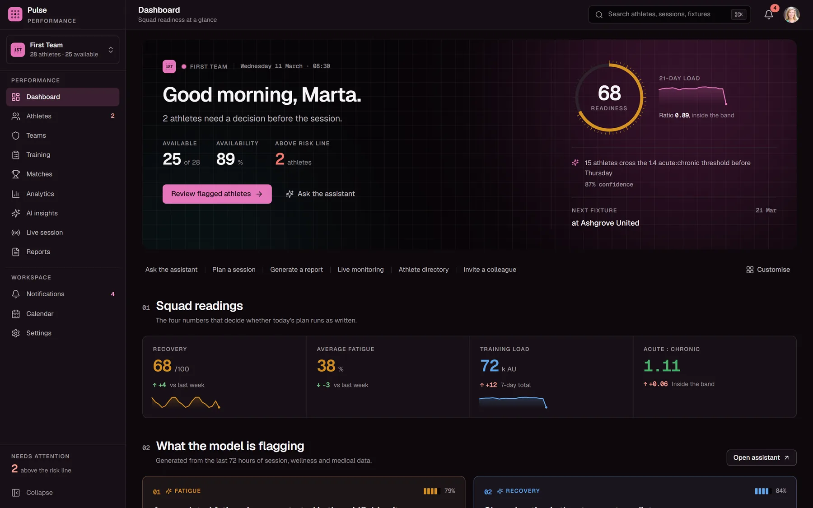
The same screen. No layout changed — only the tokens were re-pointed.
One surface allowed to shout.
The failure mode of an analytics dashboard is that every card competes, so nothing reads first. Here exactly one element is permitted weight: the command band across the top, on the product's ink, carrying the squad's readiness and the single sentence a coach needs at 08:30 — 2 athletes need a decision before the session. Everything below it is deliberately quieter, and the numbers are links: any figure opens the athlete, session or fixture behind it.
Those six routes are the spine of the product. The full set — and what each one is for — is walked through further down.
An assistant that shows its working.
The easy version of this feature is a chat box that returns a confident paragraph. That is exactly the version a performance department cannot use, because a recommendation that changes a medical or selection decision has to be auditable. So every answer arrives with the athletes it is talking about, the figures it used, a concrete session adjustment, a confidence score, and the data sources it read. The disclaimer under the input says the quiet part out loud: verify anything that changes a medical or selection decision.
{kind=link}
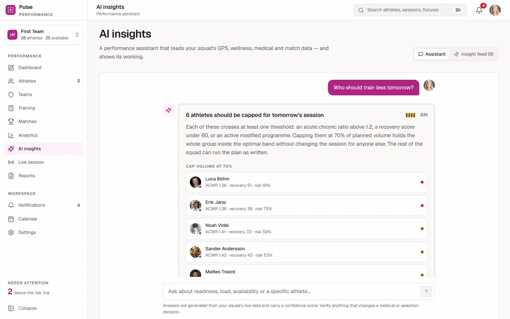
Named athletes with their numbers, three concrete session adjustments, and the sources it read — not a paragraph of confident prose.
A coach and a physio do not see the same athlete.
Seven roles use this product — head coach, assistant coach, sports scientist, performance analyst, physiotherapist, athlete and admin — and they do not need the same page. A physiotherapist opening an athlete sees the diagnosis, the rehab stage and the clinical notes. A coach opening the same athlete sees availability, an expected return date, and nothing clinical.
That split is not a convenience, it is the requirement. Health data is special-category personal data, and "everyone on staff can see everything" is the comfortable default that puts a club on the wrong side of it. So the permission model is enforced twice — in middleware, so a role cannot reach a route, and again in the service layer, so it cannot reach a record even if it reached the route.
{kind=link}
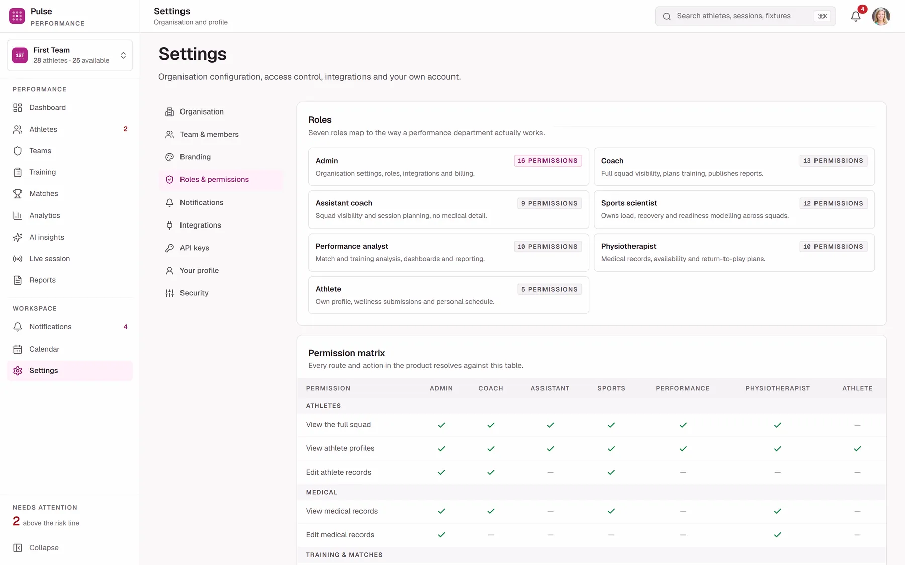
The permission matrix is administered in the product rather than buried in a config file — an admin can see exactly which role reaches which data category, including the medical one.
Twelve destinations, two groups.
The sidebar splits in two, and the split is the information architecture in miniature. Performance is the work — the nine screens a coach or scientist moves between while deciding what happens today. Workspace is the three screens that exist so the first nine can be trusted: what changed, what is scheduled, and who is allowed to see it. Nothing lives in the sidebar that a role cannot reach, so the navigation is never advertising a door that is locked.
Performance
The 08:30 screen. Readiness, availability, who needs a decision today, and one route into each. It is the only screen that answers a question you did not have to ask.
{kind=link}
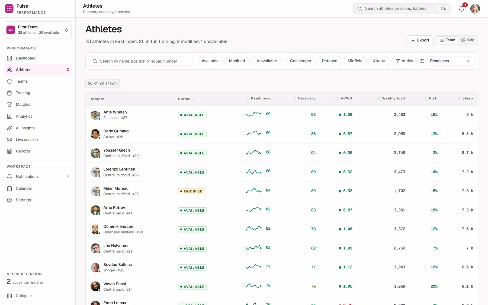
All 80, filterable by squad, position group, availability and risk. A table because this is a scanning task, not a browsing one.
{kind=link}
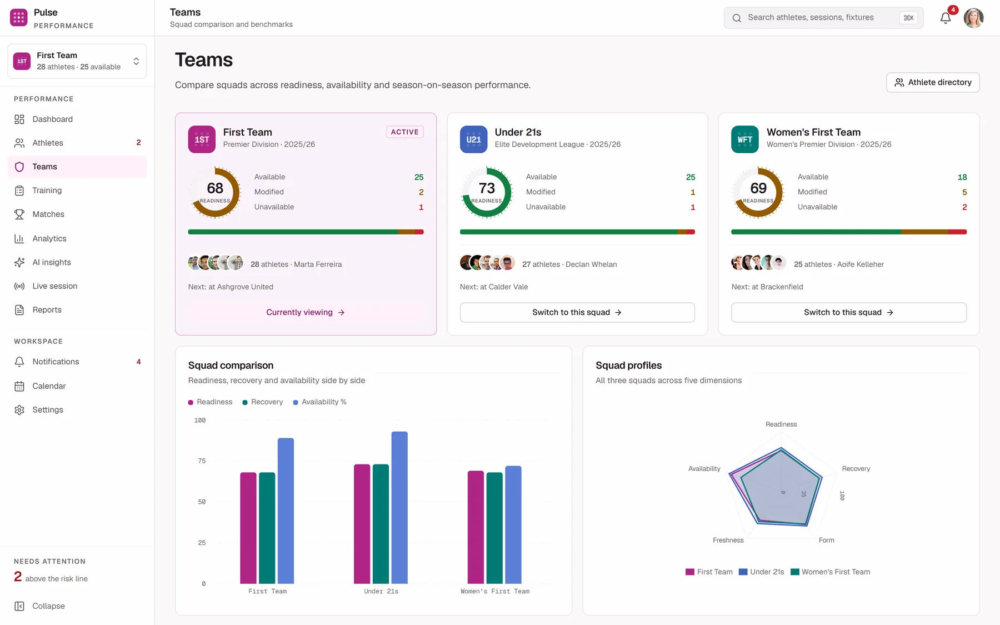
Three squads with their own crest, staff and readiness. The selector here scopes every other screen in the product.
{kind=link}
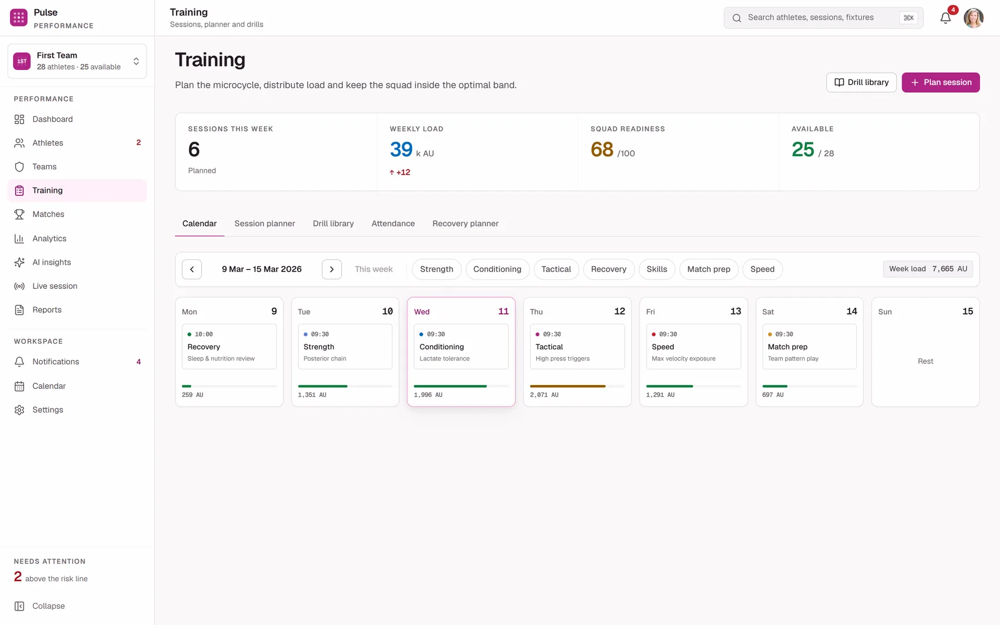
Plan the week and watch the modelled load move as you write it — the cost of a session before it is run, not after.
{kind=link}
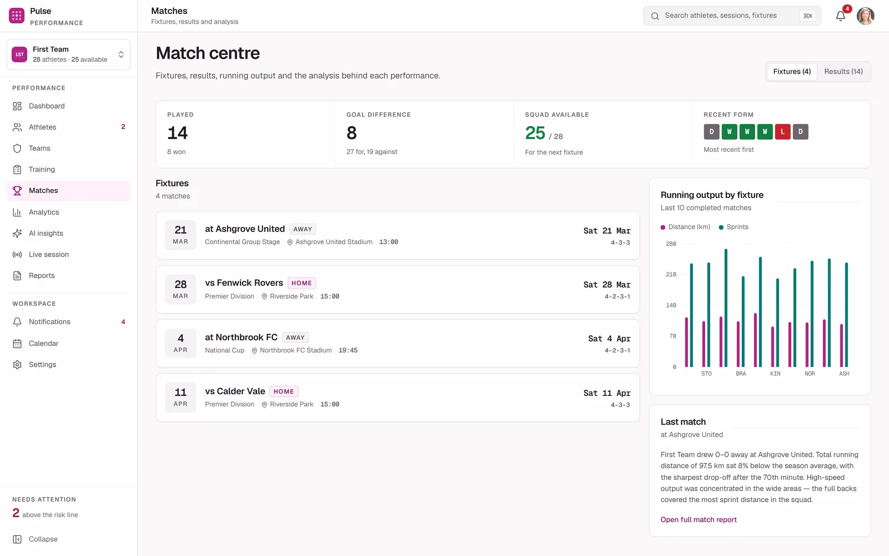
Fixtures, results and the shape of each performance. Match output is the outcome the training week was arguing about.
{kind=link}
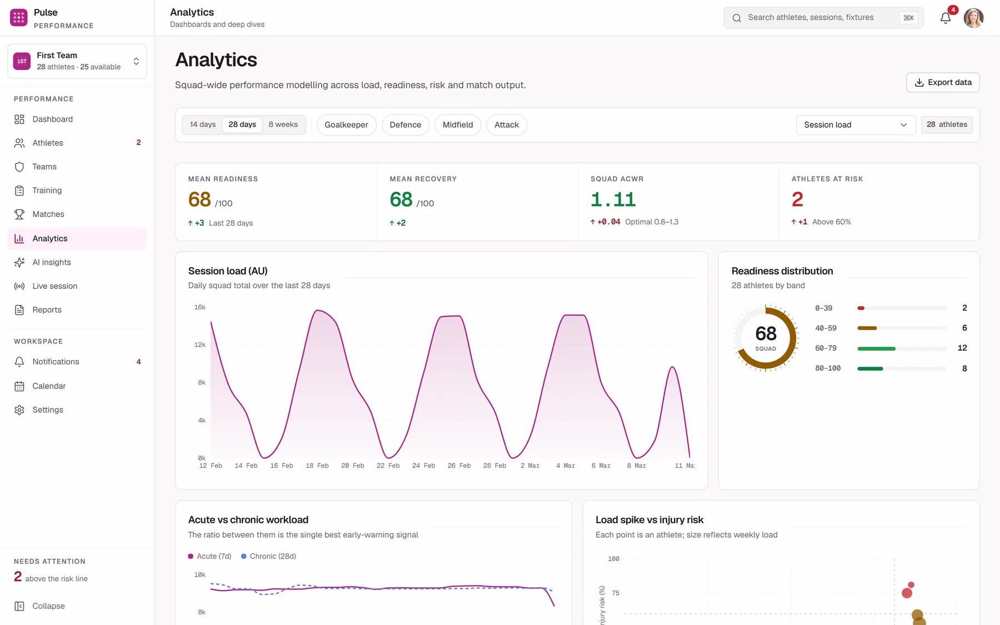
Where the squad-level questions get answered: acute against chronic load, load spike against injury risk, unit comparison, match trend.
{kind=link}
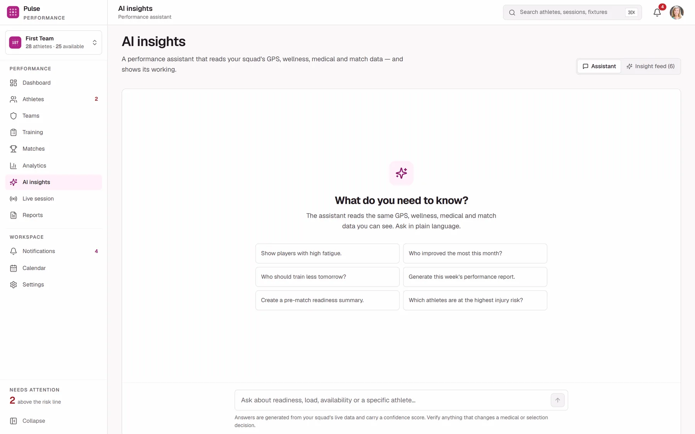
Ask in plain language instead of building a query. Every answer carries its athletes, its figures, a confidence score and its sources.
{kind=link}
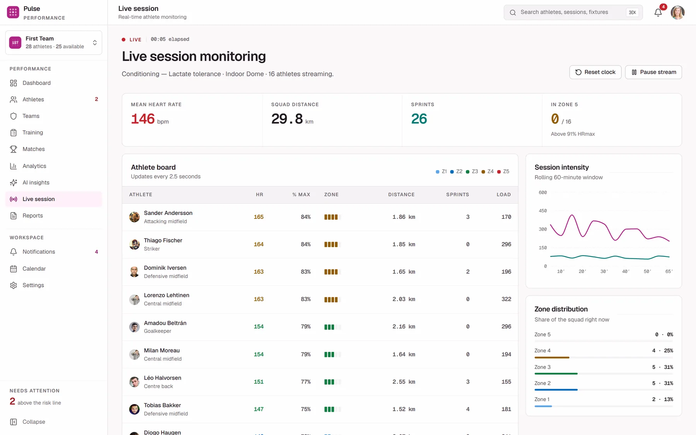
The session as it happens rather than a report about it afterwards. Built phone-first, because this screen is used on grass.
{kind=link}
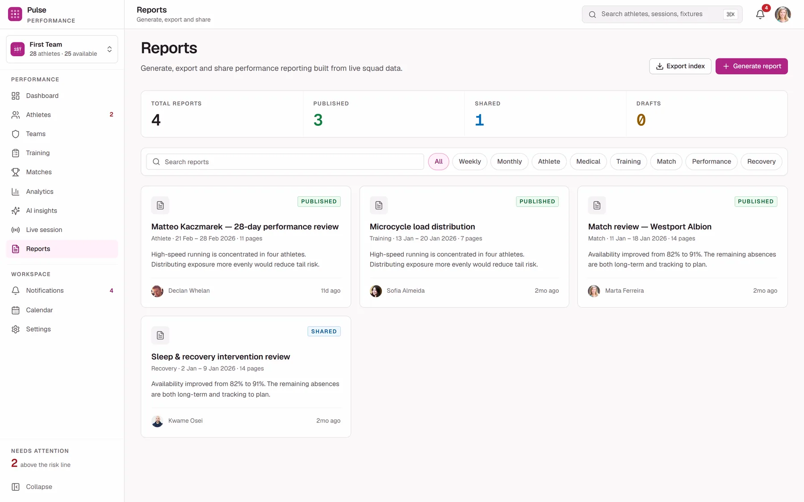
Weekly, medical, match and athlete reports generated from live data, exported to PDF or CSV for the people who do not log in.
{kind=link}
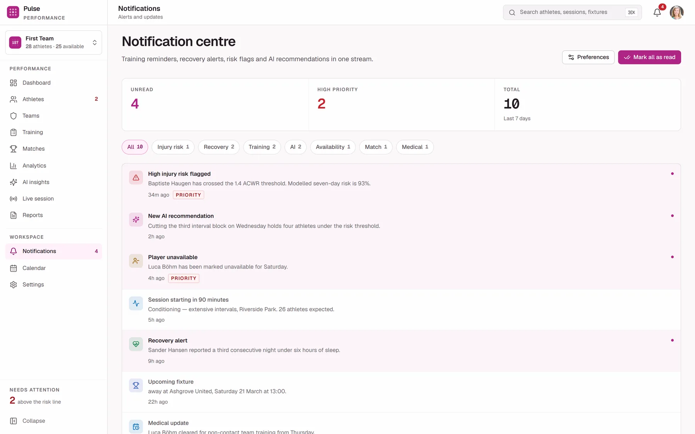
Threshold crossings, missed check-ins and schedule changes. The things that should find you rather than wait to be discovered.
{kind=link}
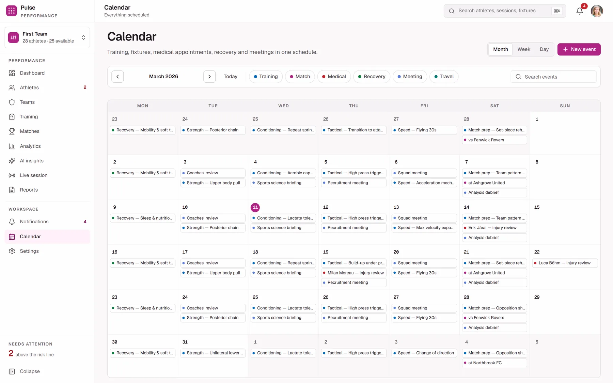
Sessions, fixtures and medical appointments on one timeline — the answer to “what is actually happening this week”.
{kind=link}
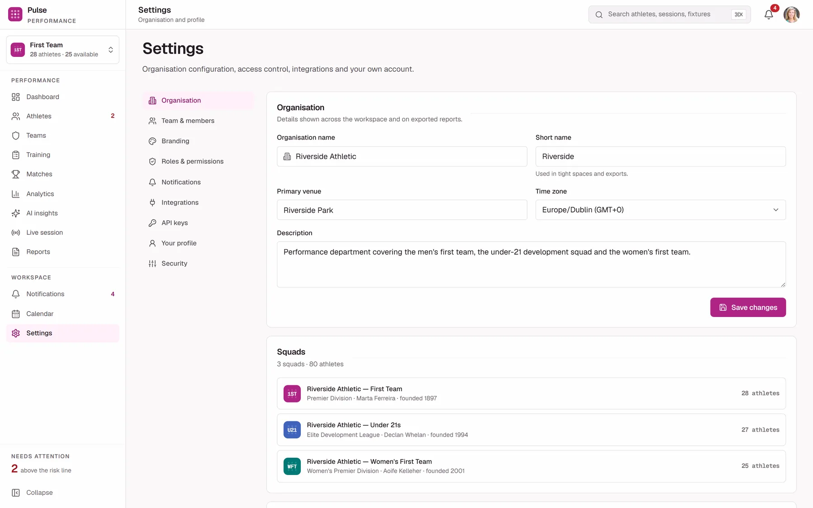
Profile, team, roles, integrations, security and branding. Where the permission model in the previous section is actually administered.
One destination is deliberately not in the sidebar. The command palette has no home, because it is meant to be reached from wherever you already are.
{kind=link}
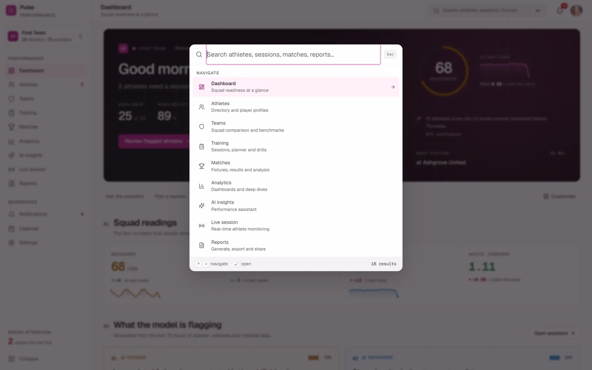
Every athlete by name or squad number, every fixture and every report, at keyboard speed. ⌘B collapses the sidebar, ⌘I opens notifications.
{kind=link}
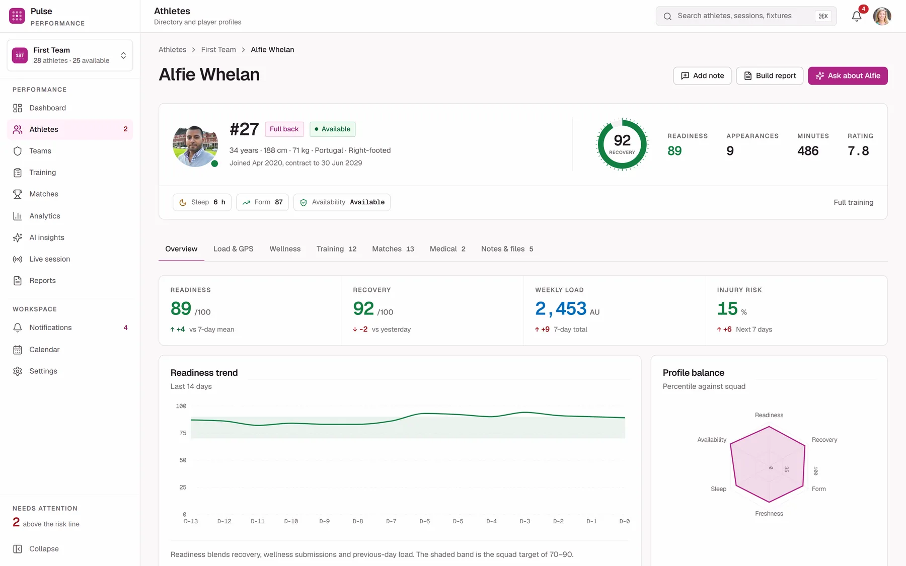
Not a sidebar item but the destination most of them lead to — every number in the product is a link, and this is usually where it lands.
The scrim follows the type.
The sign-in screen started life as the default: a dark panel with two blurred colour blobs behind it. It looked like every AI-generated hero of the last two years. It was replaced with a real training-ground photograph — pulled into the brand's colour world with a duotone that keeps the photo's luminance but takes its hue from the product, so the pitch green and teal bibs stop fighting the magenta.
The part I got wrong first is the interesting part. I painted the scrim that
protects the text at panel level, positioned in rem. It passed
on my screen. Then it failed on a narrower one — because the text block
rewraps as the panel narrows, grows taller, and slides out from
under its own protection. The fix was to attach the gradient to the
text block and size it as a share of that block, so it follows the text
wherever the text goes. The stop values are not taste either: each is the
opacity needed to hold that band's smallest text at 4.5:1 against the
brightest pixel the photograph puts behind it.
{kind=link}
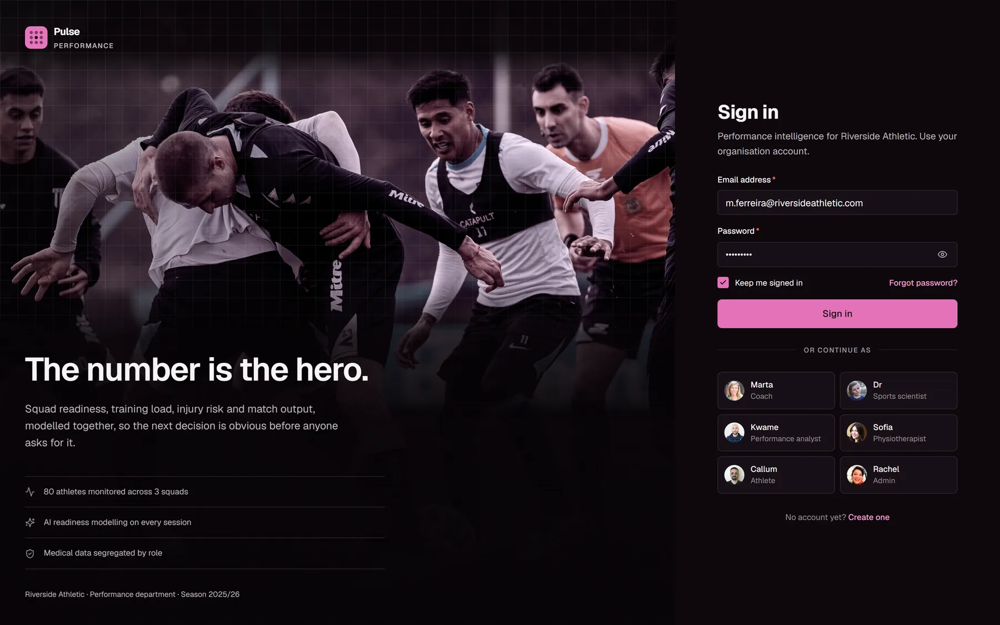
Photograph, duotone, derived scrim, and the same fine grid used on the dashboard's command band.
Verified, not assumed.
"WCAG AA compliant" is the easiest sentence in design to write and the least
often checked. Because the palette is in OKLCH, browsers hand back the raw
oklch() string rather than a colour you can measure — so I wrote
a contrast auditor that does its own OKLCH-to-sRGB conversion, composites
each text layer over whatever is actually behind it, and reports the ratio
per rendered line.
AA failures across the audited screens, in both light and dark themes.
Minimum held for body text, 3:1 for large — measured against the brightest pixel behind each line, not an average.
Viewport heights the sign-in panel was re-audited at, after the first fix passed at one size and failed at another.
Routes in the production build, all statically rendered where the data allows it.
The auditing habit caught things review never would have. Every Recharts
panel in the app was silently rendering at zero height, because a wrapper
had flex-1 and an explicit height at the same time and
flex-basis: 0 won. The text extraction looked perfect. Only
measuring the boxes found it.
A coach on a touchline is not at a desk.
On mobile the brand panel is dropped entirely and the form becomes the whole
priority. The image is not merely hidden — the responsive
sizes attribute collapses to 1px below the
breakpoint, so a phone downloads the smallest candidate in the set for an
image it will never paint.
Nothing is truncated to fit. The command band stacks rather than shrinking, so the readiness figure is still the first thing on the screen; the sidebar becomes a drawer; the assistant keeps its evidence and its sources, because an answer you cannot audit is worth less on a touchline than at a desk, not more.
{kind=link}
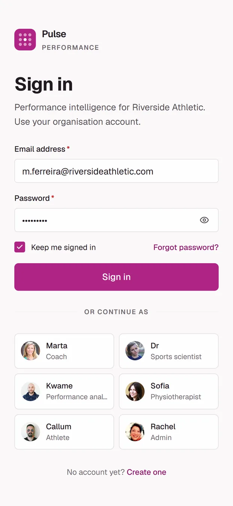
{kind=link}
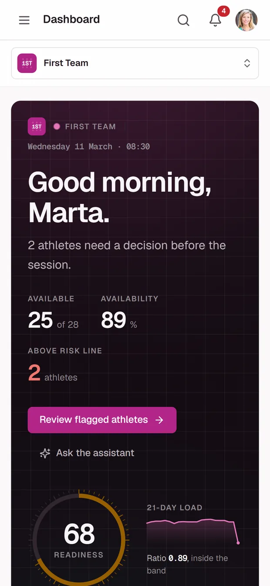
{kind=link}
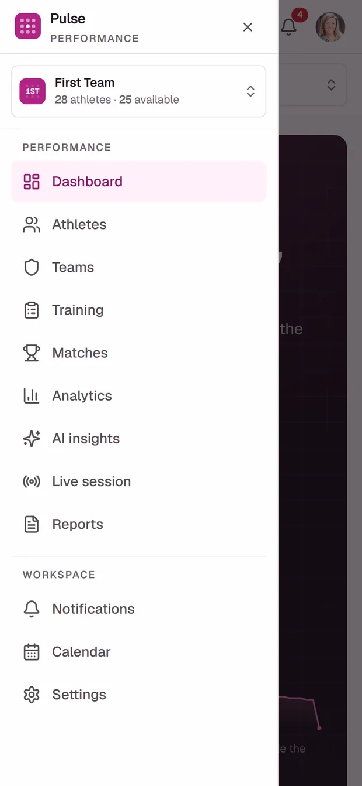
{kind=link}
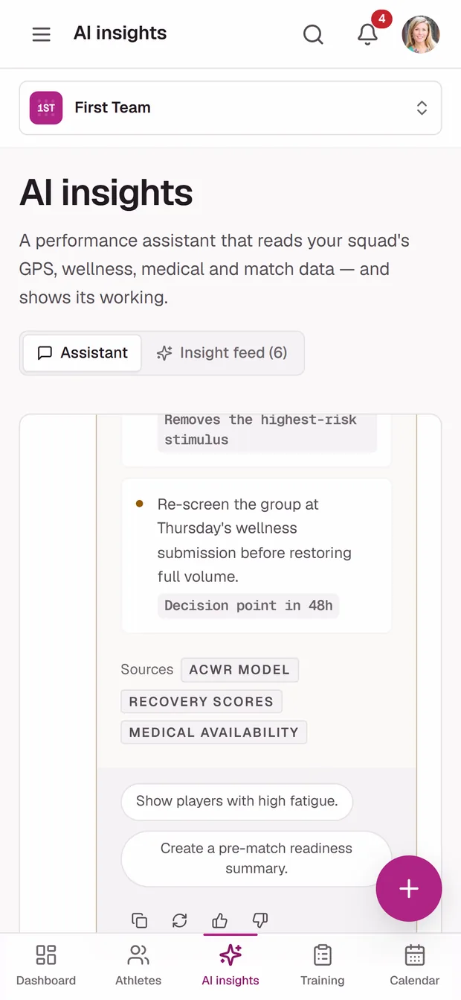
{kind=link}
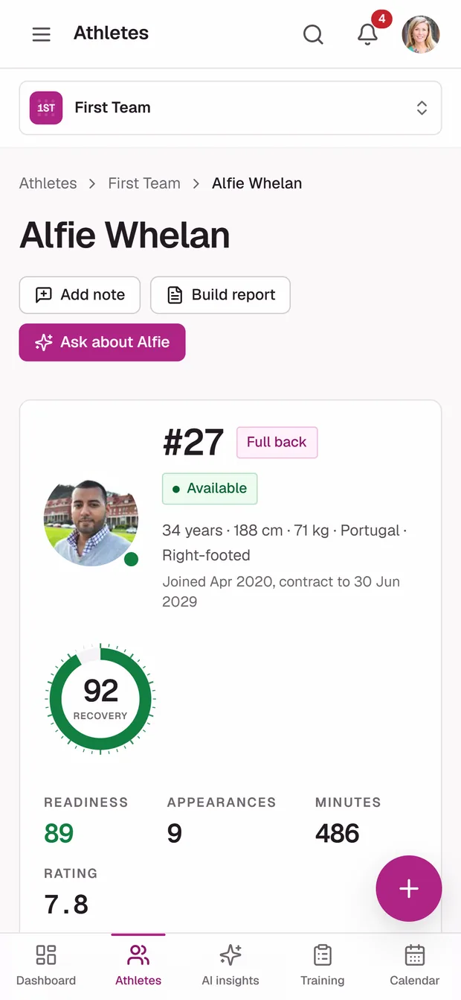
Designed and shipped by the same hands.
Designing in Figma and handing over is a different job from designing while you are the one who has to make it real. Doing both meant the design system could not contain a decision that was pretty and unbuildable, and the code could not quietly drop a decision that was inconvenient.
- Framework
- Next.js 15 App Router, React 19, TypeScript in strict mode
- Styling
- Tailwind CSS v4, with the OKLCH token layer bridged in through
@theme inline - Data viz
- Recharts, wrapped in project primitives so no screen touches the library directly
- State
- Zustand with persistence; the session is mirrored to a cookie so middleware can gate routes
- Dataset
- 80 athletes across 3 squads, generated from a seeded PRNG against a fixed clock, so server and client always agree
- Access
- 7 roles, with medical data segregated — a coach and a physio do not see the same athlete page
What the metrics are standing on.
Desk research, not primary research — I did not run a study, I read the one that already exists and let it decide what belonged on the screen. Listing it matters, because a dashboard that cites nothing is asking to be trusted on confidence alone, which is the exact failure this product is arguing against.
- Hägglund M, Waldén M, Magnusson H, Kristenson K, Bengtsson H, Ekstrand J. Injuries affect team performance negatively in professional football: an 11-year follow-up of the UEFA Champions League injury study. British Journal of Sports Medicine, 2013;47(12):738–42. bjsm.bmj.com
- Foster C, Florhaug JA, Franklin J, et al. A new approach to monitoring exercise training. Journal of Strength and Conditioning Research, 2001. The origin of the session-RPE method.
- Hooper SL, Mackinnon LT, Howard A, Gordon RD, Bachmann AW. Markers for monitoring overtraining and recovery. Medicine & Science in Sports & Exercise, 1995. pubmed.ncbi.nlm.nih.gov
- Gabbett TJ. The training—injury prevention paradox: should athletes be training smarter and harder? British Journal of Sports Medicine, 2016.
- Lolli L, Batterham AM, Hawkins R, et al. Mathematical coupling causes spurious correlation within the conventional acute-to-chronic workload ratio calculations. British Journal of Sports Medicine, 2019;53(15):921–2. pubmed.ncbi.nlm.nih.gov
- Impellizzeri FM, Tenan MS, Kempton T, Novak A, Coutts AJ. Acute:Chronic Workload Ratio: Conceptual Issues and Fundamental Pitfalls. International Journal of Sports Physiology and Performance, 2020;15(6):907–13.
What this project taught me.
Choosing the colour space is a design decision.
Picking OKLCH over hex looks like an implementation detail on the first day. By the time dark mode arrived it had removed an entire second round of design work, because scales that are perceptually even stay legible when you re-point them. The most valuable decisions in this build were made before anything was drawn.
Verifying is not the same as looking.
I called several things done after reading the screen and seeing no errors. A chart with no axes and a panel collapsed to zero height both survived that. Text on a screen tells you almost nothing about geometry, so now I measure the boxes and assert the numbers rather than trusting the impression.
Read the argument, not just the metric.
I could have shipped the acute:chronic ratio as a red-amber-green verdict and it would have looked more decisive. Reading the criticism of it changed the interface: a band and a trend instead of a judgement. Knowing how contested a number is turns out to be a design input, not a footnote — it tells you how much weight the UI is allowed to put on it.
If it only works at one size, it does not work.
The sign-in scrim passed at my window size and failed at a narrower one, because I had positioned protection against a container instead of against the thing it was protecting. Anything anchored to a guess about where content will sit is a bug that has not been resized yet.
The number is the hero. Everything else on the screen is there to make it legible.